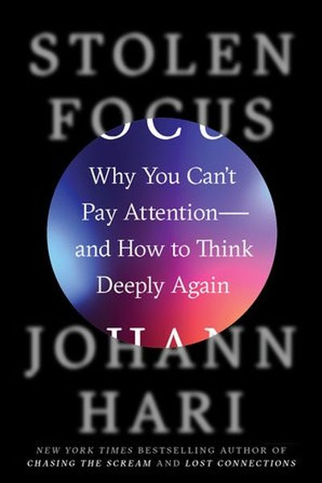

Library › Productivity
Stolen Focus — Summary & Key Lessons

Why you can't pay attention — and how to think deeply again. The international bestseller that names the thieves of focus.
📖 OPEN THE FULL INTERACTIVE BREAKDOWN →🌐 Read it in Hindi, Hinglish, Gujarati, Tamil & 22 more languages — free, with audio.
💡 The Big Idea
After interviewing 200+ experts (including tech insiders), Hari concludes the attention crisis is not a personal failing — it's an environmental one. Twelve thieves steal our focus: switching costs, flow-killing work culture, the collapse of sustained reading, speed-obsessed culture, exhaustion, and the design of social media itself. The fix isn't more willpower — it's structural change.
🧠 The 5 Key Lessons
Lesson 1: The Switching Tax: Every Ping Costs 23 Minutes
The Switching
Every time you check your phone, your brain pays a switching cost: studies show it takes around 23 minutes to fully refocus after an interruption. Ten pings an hour = your entire day vanishes into re-entry. The device isn't just distracting — it's a tax on every thought.
📖 Example: Hari spent months tracking his own attention: he discovered 'checking' averaged every 3 minutes — meaning he was almost never fully in anything. When he removed his phone for a period, his reading and thinking depth visibly returned within days. Read the full example →
⚡ Do this: Count your phone checks for one hour today. Then try one 'batch hour': all notifications off, phone in another room, one task.
Lesson 2: Flow: The Peak of Human Attention
The Flow State
Flow — total absorption in meaningful work — is the deepest form of attention and a major source of happiness. But flow takes 15+ minutes of uninterrupted effort to enter, and one ping destroys it. The system is flow-hostile; you must defend entry conditions like a fortress.
📖 Example: Hari interviewed Csikszentmihalyi's students: flow correlates with life satisfaction more than money. Yet modern work — open offices, instant messaging, meetings — fragments the 20-minute runway flow needs. Read the full example →
⚡ Do this: Block one 90-minute flow window this week: no phone, no chat, one meaningful task. Guard the entrance like a meeting with your best client.
Lesson 3: Reading Deep: The Dying Muscle
The Reading Crisis
Sustained reading trains deep attention — the ability to follow a complex argument for an hour. Skimming and scrolling train the opposite: rapid context-switching. If you never read deeply, your brain loses the muscle for it — and deep thinking is built on deep reading.
📖 Example: Hari's data: sustained-reading time among young people has collapsed while screen-skimming dominates. When he forced himself to read books without interruption, his ability to think in long arcs returned. Read the full example →
⚡ Do this: Start with 20 minutes of physical-book reading daily — no skimming, no phone nearby. Rebuild the muscle, one page at a time.
Lesson 4: Exhaustion Is a Focus Thief
The Exhaustion
You can't pay attention when you're exhausted — but modern culture treats sleep as a weakness. The average person sleeps dramatically less than a century ago, and chronic sleep debt mimics ADHD: scattered, impulsive, unable to sustain focus.
📖 Example: Hari documents how corporate culture brags about 'no sleep', while the science shows sleep-deprived people make more errors, feel more anxious and focus worse. Rest isn't the reward for work — it's the fuel for it. Read the full example →
⚡ Do this: Protect 7-8 hours like a hard deadline this week: fixed bedtime, phone out of the bedroom. Measure your focus difference in 5 days.
Lesson 5: Reclaim Boredom — It's the Incubator
The Boredom
Boredom is not an enemy — it's the state where your mind regenerates, daydreams and forms creative connections. The phone exists to eliminate boredom, which means it eliminates the incubation of ideas. Letting yourself be bored is a focus-recovery practice.
📖 Example: Some of Hari's best ideas in the book came during his phone-free walks — the unstructured minutes where the mind wandered and connected. The great scientists' 'shower moments' all required boredom first. Read the full example →
⚡ Do this: Do one screen-free, headphone-free walk this week — 20 minutes of genuine boredom. Keep a note nearby for what surfaces.
✅ 5-Step Action Plan
- Count your checks; batch your attention with a phone-free hour.
- Guard one 90-minute flow window weekly.
- Read 20 minutes of a physical book daily.
- Protect 7-8 hours of sleep like a deadline.
- Take one deliberately boring, screen-free walk.
💬 Best Quotes from Stolen Focus
- “Your attention didn't collapse. It was stolen.”
- “If you want to change your life, you have to change your environment.”
- “Boredom is where the self regenerates.”
Interactive version: mark lessons as read, listen in your language, share quote cards.